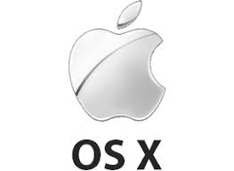
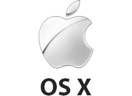

Soubor (file) je množina souvisejících dat uložených na diskové jednotce. Název souboru je obvykle tvořen jménem (ve Windows až 254 znaků) a příponou, která naznačuje typ souboru. K dalším vlastnostem souboru patří jeho velikost, autor (vlastník), datum vytvoření, datum změny, atributy, přístupová práva apod.
K přehlednější práci se soubory slouží systém adresářů či složek (directories, folders). Adresáře tvoří na disku typicky hierarchickou strukturu (tree - strom); základem je tzv. kořenový adresář (root) označený symbolem „/“ (Unix, Linux), nebo „\“ (Windows). Každý adresář může obsahovat soubory i podadresáře (subdirectories).
Cesta (path) vyjadřuje umístění souboru vždy směrem od nejvyššího adresáře: C:\XAMPP\mysql\bin\mysql.exe. Pro operace se soubory využíváme někdy zástupné znaky (wildcards):
• symbol * nahrazuje v názvu libovolný počet znaků (např. *.*);
• symbol ? nahrazuje jeden libovolný znak (např. s?s.txt).
Programové soubory obsahují instrukce, podle nichž procesor ve spolupráci s dalšími hardwarovými komponentami plní konkrétní úlohy. Mohou být uloženy v již zkompilované binární podobě (nejčastěji ve strojovém kódu pro danou platformu), nebo ve zdrojovém kódu, obsahujícím příkazy určitého programovacího jazyka. Mezi programové soubory můžeme zařadit také skripty, soubory instrukcí v textové podobě, které ke svému spuštění vyžadují speciální program - interpret.
Větší programy jsou tvořeny programovými knihovnami (runtime libraries), speciálními soubory s připravenými funkcemi, které programy využívají pro svůj běh. Ve Windows to jsou např. soubory DRV a SYS (obsahující zejména ovladače čili drivery, ale i systémové funkce), nebo také DLL (dynamic linking library - dynamicky linkované knihovny), které mohou být podle potřeby za běhu (dynamicky) připojeny k jednomu i více programům.
Některé soubory s tzv. spustitelnou příponou (např. .exe a .com ve Windows, .sh v Linuxu) slouží ke spuštění programu - aktivaci procesu v rámci operačního systému. Za rezidentní programy (služby, démony) označujeme ty procesy, které jsou spuštěny automaticky po iniciaci operačního systému (např. antivirové programy).
Datové soubory obsahují data různého charakteru (číselné, textové, grafické, zvukové údaje). K jejich zpracování se používají konkrétní programy, a proto jsou často přípony těchto datových souborů asociovány (propojeny) s určitou aplikací (např. DOCX s programem MS Word, nebo XLSX s programem MS Excel).
Programové vybavení (software) je podmínkou využití technického vybavení (hardware). V raných dobách počítačové éry byly programy vytvářeny vždy pro konkrétní hardware. V okamžiku, kdy počítače začaly být produkovány ve větších sériích, objevila se i potřeba vývoje speciálních systémových programů, které by obstaraly základní operace s hardwarem a nabídly prostředí pro běh aplikací, tj. programů určených pro konkrétní účely.
Základním programovým vybavením počítačů (a jim podobných zařízení) jsou operační systémy (OS - Operation System). Jejich nejdůležitější funkcí je zajištění řízení hardware. To má na starosti jádro systému, které tvoří subsystémy pro správu procesoru, paměti, diskových médií a dalších zařízení. Jádro pro své operace vyžaduje instalaci ovladačů jednotlivých zařízení (drivers) a s jejich pomocí zpřístupňuje technické vybavení běžícím procesům.
Nezbytnou součástí operačních systémů je aplikační rozhraní (API - Application Programming Interface), které nabízí programátorům prostředky pro vývoj aplikací pro daný systém. Uživatelské rozhraní slouží k ovládání OS a k spouštění aplikací. Zatímco starší OS se ovládaly častěji prostřednictvím příkazového řádku (CLI - Command Line Interface), moderní systémy poskytují grafické uživatelské rozhraní (GUI - Graphic User Interface) založené na oknech a grafických prvcích.
Současné OS rozdělujeme nejčastěji podle typů zařízení, pro která jsou určeny. Existují systémy pro síťové servery (např. MS Windows 2012 Server, Linux, Unix), pro běžné osobní počítače - desktopy, notebooky, netbooky (např. MS Windows, Linux Ubuntu, OS X), pro mobilní zařízení (Android, Symbian, Windows Phone, iOS) i speciální RTOS (Real-Time Operating System - systémy reálného času), které zajišťují provoz „chytrých“ zařízení, jakými jsou robotické kamery využívané pro sportovní přenosy, měřící přístroje na orbitálních stanicích nebo jednotky pro řízení různých průmyslových procesů. Zatímco u desktopového systému je možné pozdržet dokončení některých operací a provádět paralelně jiné operace, v případě RTOS je nezbytné provádět operace bez prodlevy a s vysokou spolehlivostí v reálném čase.

 
